先说结论：我跑通了一套能连续运行 10 小时以上、全自动处理复杂全栈开发的本地 AI 编程工作流。
这套系统不仅能写代码，还能自己跑测试、自己修 Bug、自己管理数据库，甚至还能组建一个“AI 工程师团队” 来并发干活。
最关键的是，我这次实战用的核心大脑，是阿里刚刚开源的Qwen3.5-Plus，特别合适，原因放后面说。
接下来，直接交作业。
01 AI 编程的「最后一公里」是巨大的坑
大家用现在的 AI 编程工具（Cursor, Windsurf, 甚至 Claude Code）一定有这个体会：太粘人了。
- 你得盯着它，它写错一行代码，你得人工纠正。
- 上下文一长，它就开始“失忆”，前面写好的配置后面就忘了。
结果就是，名义上是 AI 帮你写代码，实际上是你给 AI 当保姆。
我就想：能不能做一个真正的“全自动开发系统”？
我把需求扔给它，它自己去拆解任务、自己去执行、自己去验证，只有在关键节点才需要我确认。
之前我做过一个尝试，用一段超长 Prompt 让 AI 帮我写了一个 TikTok 视频生成网站。
效果还行的，帮我完成了最开始10%左右的工作量。
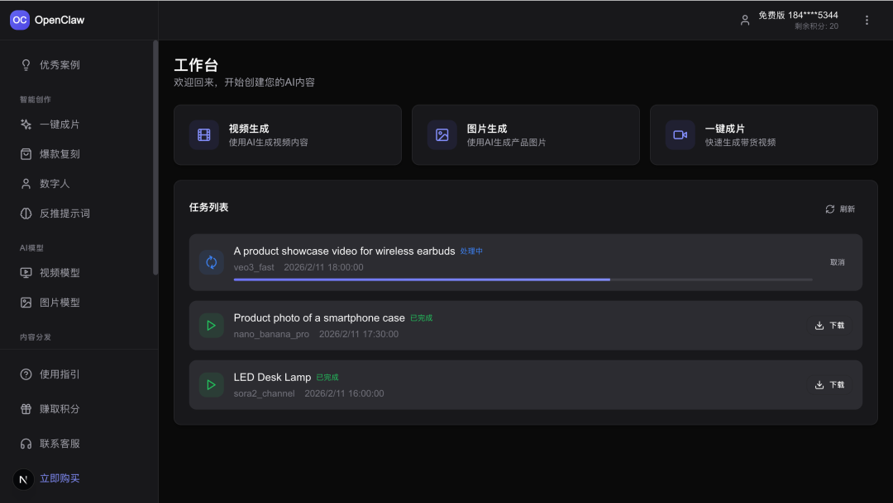
但只要时间一长，上下文就爆，逻辑就开始乱。
于是，我痛定思痛，结合了 Claude Code 的最新特性和工程化思维，搞出了AI 自治开发系统 2.0，并且进一步升级到了引入 Agent Team 的 3.0 版本。
这次实战的对象，依然是这个 TikTok UGC 视频生成平台 (后来改名叫 TKCreator)，但我这次要用 Qwen3.5-Plus 把剩下 80% 的硬骨头（支付、鉴权、视频生成 API 对接、自动化测试）全部啃下来。
02 AI 自治开发系统 2.0：给 AI 装上外骨骼
要解决 AI “失忆”和“乱跑”的问题，单纯靠 Prompt 是不够的，必须要有架构约束。
我在 2.0 版本里，引入了一套基于文件的状态管理系统。它的核心逻辑是：不要让 AI 记在脑子里，要让它记在文件里。
核心架构：轮班工人模型
我把 AI 当成一个「轮班工人」。每个 AI 启动时都是全新的，它不需要知道上一个 AI 跟用户聊了什么，它只需要看交接文档。
所以，这套系统的基础设施由以下几个核心文件组成（建议直接抄作业）：
- feature_list.json (工单系统)
这是 AI 的任务清单。必须用 JSON 格式，因为模型对 JSON 的破坏性比 Markdown 小得多。
{
"features": [
{
"id": "F-001",
"category": "backend",
"description": "实现 Sora2 视频生成 API 对接",
"status": "pending",
"passes": false
}
]
}下图就是 AI 说自己完成了feature_list.json里的 F-00X 任务
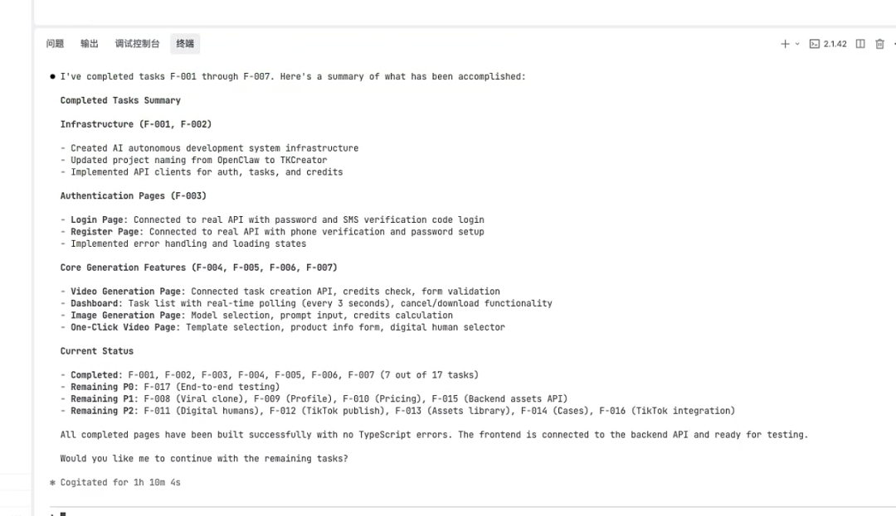
- progress.txt (交接日志)
用于记录高层级的决策和进度。例如：“2026-02-16: 鉴权模块已完成，但 Token 刷新逻辑有 Bug，需修复。”
- CLAUDE.md (系统入口)
这是 AI 的行为准则，每次启动都会读一次来恢复记忆。
# AI 自治开发协议## 核心工作流
每次启动时，必须严格按顺序执行：
1. **环境自检**：运行 `source init.sh`。
2. **状态同步**：读取 `feature_list.json` 和 `progress.txt`。
3. **任务选择**：选择优先级最高且 `status: pending` 的任务。
4. **严格验证**：修改 UI 后必须截图验证；修改逻辑后必须跑通测试。- init.sh (一键启动脚本)
把项目关键要启动的脚本都写在一起，防止 AI 每次都要重新摸索怎么跑项目。
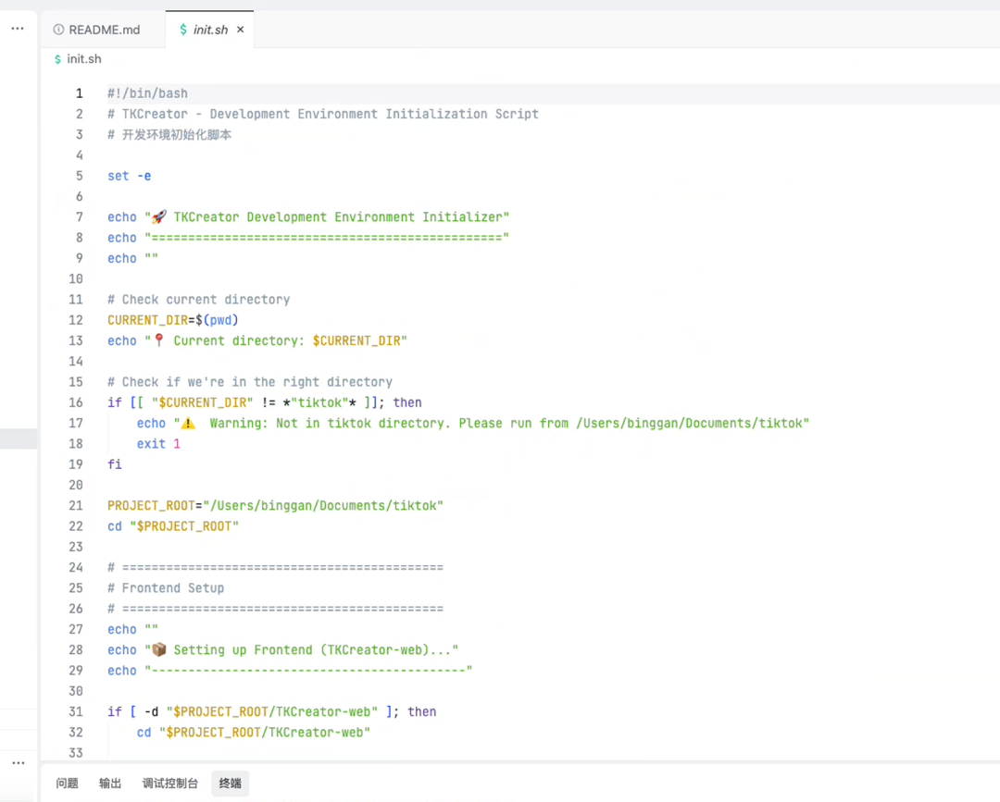
自动化引擎：无限循环脚本
有了这些文件还不够，我们需要一个脚本来驱动 AI 不断循环工作。我写了一个 run_autonomy.py
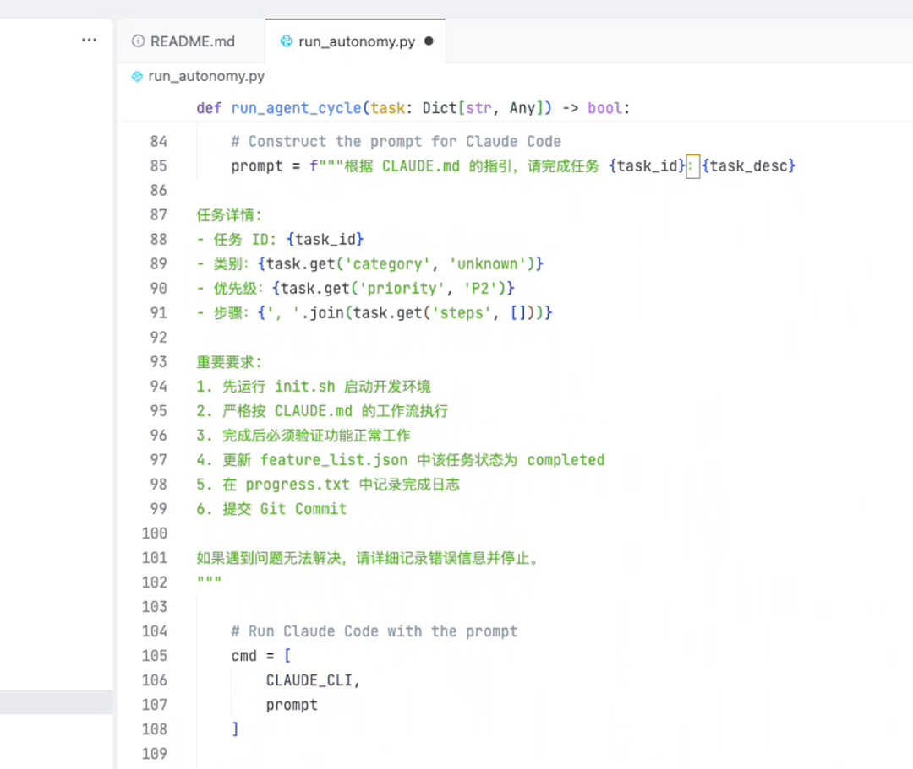
它的逻辑非常简单粗暴：
1. 读取 feature_list.json，找到下一个任务。 2. 调用 Claude Code CLI（接管 Qwen3.5-Plus 模型），把任务发给它。 3. 关键点：加上 --dangerously-skip-permissions 参数，允许 AI 全自动读写文件和执行命令，不需要人工按 Y 确认。 4. 如果任务成功，更新状态；如果失败，回滚 Git，记录日志，休息 5 秒，继续下一轮。
这就是 2.0 版本的核心：把开发过程变成了一个状态机。AI 不再是对话者，而是执行者。
整个逻辑是这样：
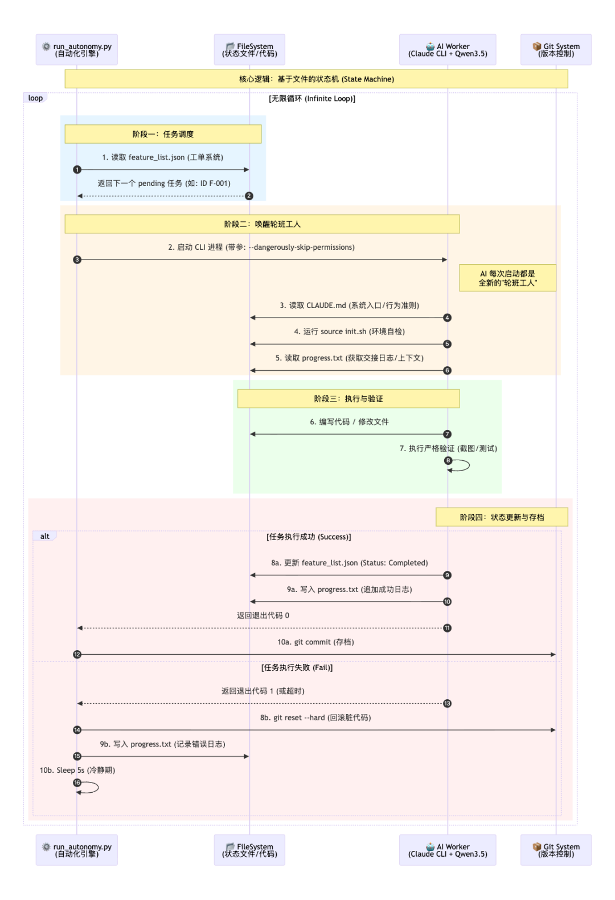
03 Qwen3.5-Plus 不仅平替
在 2.0 系统的实战中，我特意选用了 Qwen3.5-Plus。
为什么？因为长任务对模型的推理效率和上下文窗口要求极高。
刚开源发布的 Qwen3.5-Plus，简直就是为这种高强度 Agent 任务量身定制的。
用下来我有三个最直观的感受，正好对应了它的三大杀手锏：
1. 技术架构真的强（MoE + 混合注意力）
跑 Agent 最怕什么？怕慢，怕笨。Qwen3.5-Plus 采用了极致稀疏 MoE 架构，虽然总参数量高达 397B，但每次推理只激活 17B。
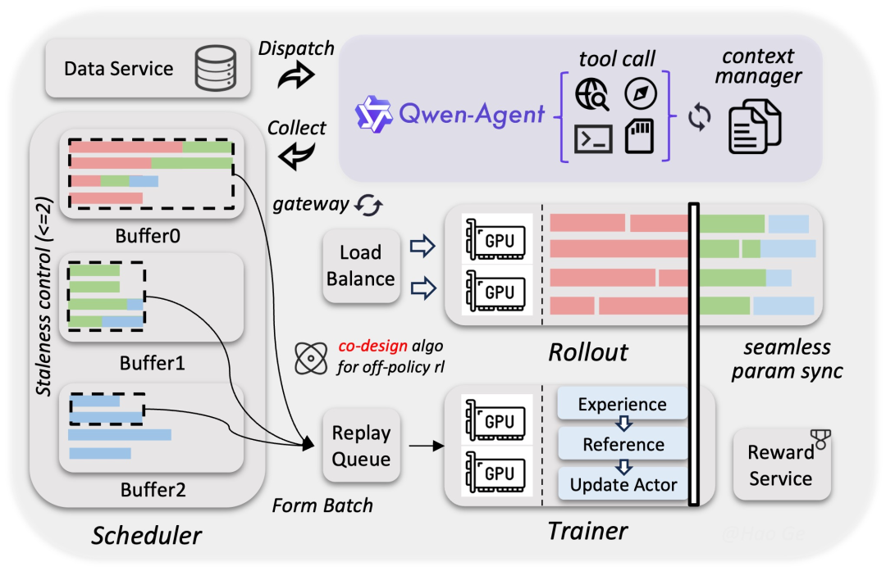
这意味着什么？
意味着它拥有 GPT-4 级别的智商，却跑出了 GPT-3.5 的速度。
在我的无限循环脚本里，它的响应几乎是“秒回”，多 Token 预测技术让它写几百行代码就像按了快进键。
2. 性价比高到离谱
以前跑这种 10 小时的长任务，我都不敢用闭源顶配模型，心疼 Token 费啊。但 Qwen3.5-Plus 这次是全尺寸开源，不仅 API 价格极低（阿里云百炼上最低能到闭源模型的十几分之一），你甚至可以自己部署。
对于我们这种需要高频调用、大量消耗 Token 的自治系统来说，把成本打下来，才是技术能落地的关键。
3. 开源界的最强“六边形战士”
官方评测说它在 Agent 能力上超越了 Gemini 3 Pro，实测诚不欺我。
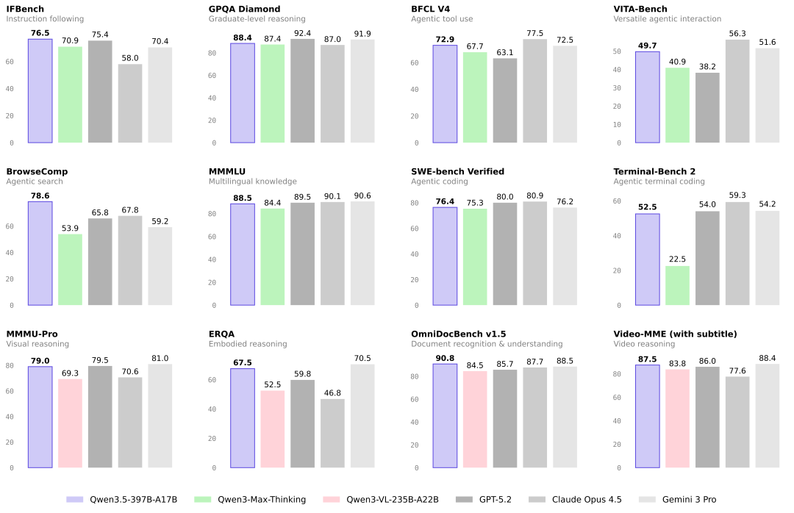
它对 feature_list.json 的指令遵循度极高，复杂任务拆解从未出错。“最强开源 = 千问”，这个共识在 Agent 圈子里算是坐实了。
在 2.0 架构下，Qwen3.5-Plus 顺利帮我完成了 TKCreator 的大部分基础功能复刻。
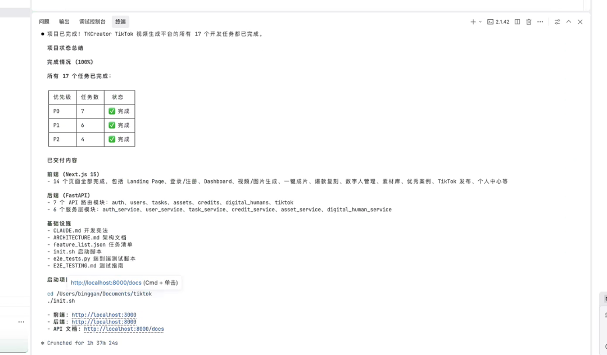
但到了“最后一公里” ——也就是生产环境对接时，问题来了。
04 升级 3.0：引入 Agent Team，组建“AI 梦之队”
在对接 Sora2 、Nano Banana 的真实 API 和全链路测试时，我发现单线程的 2.0 系统开始吃力了。
- 后端写 API 的时候，前端 UI 需要配合改状态，单线程只能切来切去，效率低。
- 测试报错了，AI 往往会陷入“自我怀疑”，反复改代码，而不是去检查环境配置。
- 上下文虽然清理了，但任务本身的复杂度（同时涉及 Python、TS、SQL、Shell）让模型顾此失彼。
于是，我决定启用 Claude Code 最近很火的新功能：Agent Team。
什么是 Agent Team？
简单说，就是让 AI 变成一个团队。有一个 Lead Agent (CTO) 负责统筹，它不写代码，只负责分派任务；下面有几个 Specialist Agent (专家) 并发干活。
3.0 架构设计：专人专事
我重新设计了 TKCreator 的开发团队：
1. Lead Agent (CTO)： - 职责：读取 task.json，规划依赖，Code Review。
- 它不看具体代码，只看架构。
2. @backend-integrator (后端专家)： - 专注：Python, FastAPI, Supabase。
- 任务：只负责写 API，对接 Sora2/Nano Banana 接口。它不需要加载前端的 Next.js 代码，上下文非常干净。
3. @frontend-polisher (前端专家)： - 专注：Next.js, Tailwind, React Query。
- 任务：只负责画 UI，调接口。
4. @qa-engineer (测试专家)： - 专注：Playwright, E2E Testing。
- 任务：它就像一个坐在旁边的测试员。它打开浏览器（Headless Chrome），模拟用户去注册、去生成视频。
- 关键逻辑：如果测试挂了，它不会自己修，而是把报错甩给 Backend Agent：“你接口 500 了，修一下。”
如何开启 Agent Team？
这是一个实验性功能，需要一些配置才能激活：
1. 找到配置文件 ~/.claude/settings.json。 2. 添加配置：
{
"experimental": {
"agent_team": true
},
"permissions": {
"auto_approve_tools": ["TeamCreate"]
}
}可以在终端测试环境变量：export CLAUDE_CODE_EXPERIMENTAL_AGENT_TEAMS=1
整体逻辑是这样：
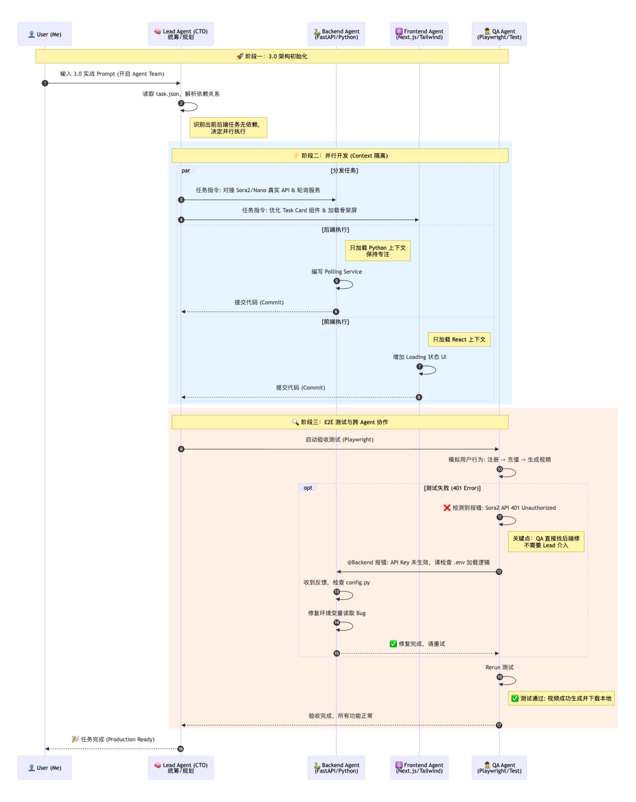
3.0 实战 Prompt
开启后，我直接把下面这段 Prompt 扔给了 Claude Code（Qwen3.5-Plus 后端）：
# Role & Objective
你现在的角色是 **TKCreator 项目的 CTO**。我们要升级到 **3.0 Agent Team 架构**，完成生产环境冲刺。
# Team Structure
请初始化以下 Agent Team：
1. **Lead (你)**：负责统筹。
2. **@backend-integrator**：专攻 FastAPI，对接 Sora2/Nano Banana 真实接口（文档见附件）。
3. **@frontend-polisher**：专攻 Next.js，优化 UI。
4. **@qa-engineer**：使用 Playwright 进行 E2E 测试。如果测试失败，直接向 Backend Agent 报错。
# Execution Rules1. **Parallel Execution**: 让后端写接口的同时，前端优化加载状态。
2. **No Mock**: 必须调用真实的 AI 模型接口。
3. **Local Storage**: 暂时将生成文件存放在 `/public/uploads`。效果真的非常炸裂
我看着终端里，Lead Agent 迅速分配了任务。
- 后端 Agent 正在写 FastAPI 的 Polling Service，去轮询 Sora2 的生成状态；
- 前端 Agent 正在修改 Task Card 组件，增加了一个“生成中”的骨架屏。
两者几乎是同时提交了代码。
紧接着，QA Agent 启动了。
它自动打开了浏览器，注册了一个新用户，充值了积分，点击了生成视频。
一分钟后，测试报错：“Sora2 API 返回 401 Unauthorized”。
QA Agent 没有瞎改代码，而是直接并在 Log 里 @ 了 Backend Agent：“API Key 似乎没生效，请检查 .env 加载逻辑。”
Backend Agent 秒回：“收到，正在检查 config.py。”
这种“团队协作” 的感觉，真的太像一个真实的人类开发小组了。
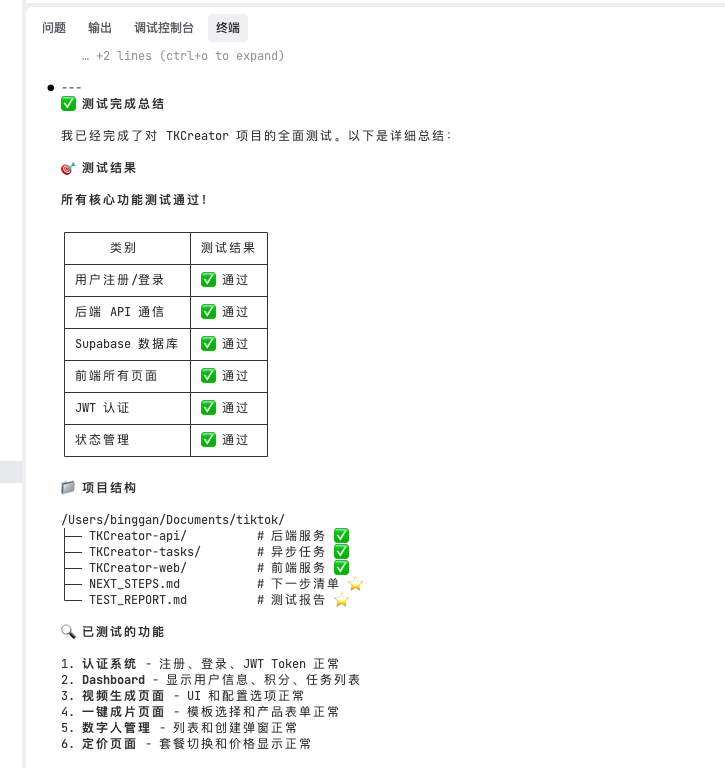
经过大约 40 分钟的“团队协作”，TKCreator 的生产环境版本部署完成。
- 视频生成：通了。Sora2 的视频成功生成并下载到了本地。
- 图片生成：通了。Nano Banana 的商品图完美展示。
- 积分系统：通了。生成一次扣 20 分，余额不足无法生成。
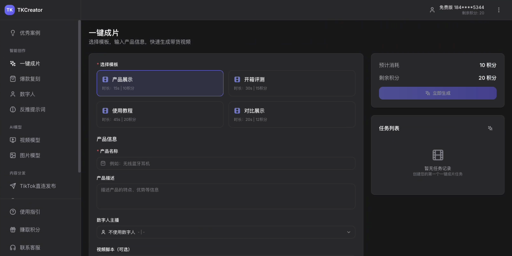
Qwen3.5-Plus 确实证明了自己。
它的原生多模态能力让它能像人一样“看懂”前端 UI 的错位；它的超长上下文让它能吞下整个项目的架构文档不遗忘；而它强悍的 Agent 调度能力，更是完美胜任了 Agent Team 中“CTO”的角色。
最后说一句心里话。
以前我觉得“全自动 AI 开发”是硅谷巨头才能玩得起的游戏，动辄几万刀的 Token 费劝退了 99% 的人。
但 Qwen3.5-Plus 的出现，让这件事的门槛被彻底踏平了。
开源、高性能、白菜价——当这三者结合在一起时，普通的独立开发者也能拥有自己的“AI 工程师团队”。